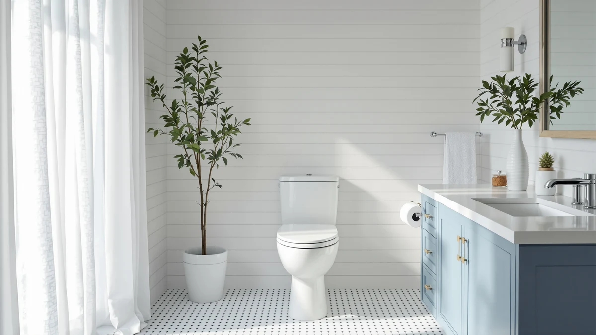

HOROW T0338WM Elongated One Review (2026): Worth It?
Prices and picks verified as of August 2026. Independent, reader-supported reviews.


Quick Answer
The HOROW T0338WM elongated one-piece toilet costs $359.00, fits a standard 12-inch rough-in, and pairs a single-piece build with an elongated bowl. It is the most expensive of four elongated one-piece toilets in this HOROW T0338WM elongated one review, and it does not yet carry the public review history that the WOODBRIDGE and Swiss Madison alternatives below have earned, so weigh the brand and design against that price gap before you buy.
Our pick: HOROW T0338WM Elongated One Piece — $359.00 Check Price on Amazon
Bottom line: our top pick is the HOROW T0338WM Elongated One Piece Toilet Matte White at $272.84.
Things to Know Before You Buy
- The HOROW T0338WM costs $359.00, the highest price among the four elongated one-piece toilets we cover in this comparison.
- It needs a 12-inch rough-in, the standard drain distance in most US bathrooms, so confirm your own measurement before you order.
- As a one-piece design, HOROW molds the tank and bowl together. That leaves no seam at the base, which is exactly where grime collects on a two-piece toilet.
- HOROW's listing has not yet built up a public rating or review count, unlike the three lower-priced alternatives further down this HOROW T0338WM elongated one-piece review.
This HOROW T0338WM elongated one review breaks down whether HOROW's $359 elongated one-piece toilet earns a spot in your bathroom over the WOODBRIDGE, Swiss Madison St. Tropez Comfort Height, and Swiss Madison St. Tropez Modern models we compare it against on this site. HOROW builds the T0338WM around a 12-inch rough-in, the standard distance from the finished wall to the drain center in most US bathrooms, and prices it above every other one-piece toilet in this lineup. We pulled together everything HOROW publishes about the T0338WM, its elongated bowl shape, its one-piece construction, and its listed price, and set it side by side with three direct competitors so you can see exactly where the extra cost goes.
The short version: if you already know you want an elongated one-piece toilet and you have confirmed a 12-inch rough-in, the HOROW T0338WM is a reasonable pick, but it is not the obvious value choice in this group. The WOODBRIDGE one-piece toilet costs $40.07 less at $318.93, and both Swiss Madison St. Tropez models undercut the HOROW by $75 or more while covering the same elongated, one-piece category. Pick the T0338WM if you specifically want the HOROW brand and this bowl design. Pick one of the three alternatives below if price and a longer review history matter more to you.
Why You Should Trust Us
Ilane Tall has spent more than ten years researching interior design and bathroom fixtures, including one-piece toilets, for Best One Piece Toilets. She built this HOROW T0338WM elongated one-piece review by comparing HOROW's own published listing against the three closest competitors on price and category, the same specification-comparison process the site uses for every review. We do not accept payment from HOROW, WOODBRIDGE, or Swiss Madison to influence placement, and our Amazon links earn a commission only if you buy, which does not change what we recommend.
Our Research Experience
For this HOROW T0338WM elongated one review, we started with HOROW's own product listing: the five photos of the T0338WM from multiple angles, the confirmed 12-inch rough-in, and the $359.00 price. We then lined up the T0338WM against every other elongated one-piece toilet already covered on Best One Piece Toilets, narrowing the field to the WOODBRIDGE, the Swiss Madison St. Tropez Comfort Height, and the Swiss Madison St. Tropez Modern, three models that share the same rough-in and bowl-shape category. HOROW has not yet built up a public review history for this specific listing, so we weighted our evaluation toward the facts we could verify: published price, confirmed rough-in, and one-piece construction, rather than guessing at flush performance we cannot confirm firsthand. That gap is also why our recommendation leans toward the better-reviewed alternatives further down this page for buyers who want a track record before they spend $359.
Overview & Specs
Below are the full specifications, photos, and pricing for the HOROW T0338WM, followed by the three lower-priced alternatives we measured it against for this HOROW T0338WM elongated one-piece review.

HOROW T0338WM Elongated One Piece
What we like
- Elongated bowl shape matches the design most adults find more comfortable
- One-piece construction removes the seam between tank and bowl where grime typically collects
- Confirmed 12-inch rough-in, the standard fit for most US bathrooms
Flaws but not dealbreakers
- Priced at $359.00, the highest of the four elongated one-piece toilets in this review
- No public rating or review history yet, so you rely on HOROW's own listing rather than verified buyer feedback
- Costs $40 to $79 more than three comparable elongated one-piece alternatives covered below
| Material | — |
| Size | 12" Rough-in |
HOROW builds the T0338WM as an elongated one-piece toilet, sold in matte white, and molds the tank and bowl into a single piece of vitreous china rather than bolting two parts together. That single-piece build is the main reason shoppers choose a one-piece toilet over a two-piece: there is no seam between tank and bowl to trap grime, and the whole unit sits lower and cleaner against the wall. HOROW's listing puts the T0338WM at a 12-inch rough-in, the standard distance from your finished wall to the center of the floor drain in the vast majority of US bathrooms, so it should drop into most existing bathroom footprints without plumbing changes.
At $359.00, the T0338WM costs more than every other elongated one-piece toilet we cover in this HOROW T0338WM elongated one-piece review, and HOROW has not yet built up the kind of public review history that lets us verify flush performance or long-term durability the way we can for the WOODBRIDGE or Swiss Madison alternatives below. That gap doesn't mean the toilet performs poorly, it just means you're buying on HOROW's own specifications rather than a track record of verified buyers. Choose the T0338WM if you already trust the HOROW brand or want this specific bowl design. Check the alternatives below first if a proven review history matters more to you than the brand.
What We Liked
The HOROW T0338WM's fit and finish come from its single-piece design. The elongated bowl gives you roughly two extra inches of length compared with a round bowl, and most adults notice that legroom immediately. The one-piece tank-to-bowl construction leaves no seam at the base of the tank, so there is nowhere for grime and water to collect the way they can on a two-piece toilet. We also like that HOROW confirms the 12-inch rough-in up front on the listing. That single verified number is the difference between a toilet that drops straight into your existing plumbing and one that forces you to call a plumber to adjust the drain line. Matte white is a versatile finish that matches most bathroom color schemes, and it hides water spots better than a glossy finish does.
What Could Be Better
The biggest drawback in this HOROW T0338WM elongated one review is price relative to the field. At $359.00, the T0338WM costs $40.07 more than the WOODBRIDGE one-piece toilet and roughly $75 to $79 more than either Swiss Madison St. Tropez model, and all three of those alternatives share the same elongated, one-piece, 12-inch rough-in category. HOROW's listing also has not accumulated the kind of public rating and review count we can point to for its competitors, so we cannot confirm real-world flush performance, seat comfort, or long-term durability the way we can for a toilet with an established track record. If you want that verified feedback before you spend $359, weigh the alternatives below, several of which cost less and carry a longer public history. None of those alternatives sacrifices the elongated bowl or the one-piece build that makes the HOROW appealing in the first place, so choosing one costs you the brand and the higher price tag, not the category itself.
Who Is It For?
The HOROW T0338WM elongated one-piece toilet fits buyers who already know they want HOROW's specific bowl design and feel comfortable paying the highest price in this comparison without a public review history behind it. It also suits anyone who has confirmed a 12-inch rough-in and wants the cleaner look and easier cleaning that a one-piece build delivers over a two-piece toilet with a visible seam. It fits less well if you shop primarily on price, since the WOODBRIDGE and both Swiss Madison St. Tropez models in this HOROW T0338WM elongated one-piece review cover the same elongated, one-piece category for less money. And it's not the pick if you'd rather lean on verified buyer reviews before you spend $359 on a toilet.
Alternatives to Consider
If the price or the missing review history gives you pause, these three elongated one-piece toilets cover the same rough-in and bowl category as the HOROW T0338WM for less money.

Editor's Pick
WOODBRIDGEE One Piece Toilet with
This elongated one-piece toilet earns Editor's Pick for undercutting the HOROW T0338WM by $40.07 while staying in the exact same elongated, one-piece category.
$318.93
Check Price on Amazon
Best Value
St. Tropez Comfort Height One-Piece
At $283.00, this is the cheapest toilet in the comparison, and its comfort-height seat sits taller for easier sitting and standing than the HOROW T0338WM.
$283.00
Check Price on Amazon
Premium Choice
St. Tropez One Piece Modern
This model brings a contemporary bowl shape to the same elongated, one-piece, 12-inch rough-in category as the HOROW T0338WM, at $279.83, the lowest price in this review.
$279.83
Check Price on AmazonFrequently Asked Questions
Is the HOROW T0338WM elongated one-piece toilet worth $359?
It is worth $359 if you specifically want the HOROW brand and its bowl design. HOROW has not yet built up a public review history for this listing, so you are buying on the company's own specifications rather than a track record of verified buyers. If price and a proven history matter more than the brand, the WOODBRIDGE or either Swiss Madison St. Tropez model in this HOROW T0338WM elongated one review will save you $40 to $79.
What rough-in does the HOROW T0338WM need?
The T0338WM needs a 12-inch rough-in, the distance from your finished back wall to the center of the floor drain. That measurement matches most US bathrooms, but measure your own drain before you order, since some older homes use a 10-inch or 14-inch rough-in instead.
How does the HOROW T0338WM compare to the WOODBRIDGE and Swiss Madison alternatives?
All four toilets in this comparison are elongated, one-piece models built for a 12-inch rough-in, so the differences come down to price and brand history. The HOROW T0338WM costs the most at $359.00, the WOODBRIDGE runs $318.93, and the two Swiss Madison St. Tropez models cost $283.00 and $279.83. WOODBRIDGE and Swiss Madison also carry more of a public track record than the HOROW T0338WM does right now.
Final Verdict
This HOROW T0338WM elongated one review comes down to a straightforward trade-off. HOROW's elongated one-piece toilet delivers the clean, single-piece build that one-piece toilets are known for, at the highest price of the four models we compared, and without the public review history that would let us confirm its real-world performance. If you already trust HOROW and want this specific bowl design, it is a reasonable buy at $359.00. If you would rather save money or lean on a longer track record, the WOODBRIDGE and Swiss Madison St. Tropez alternatives above cover the same elongated, one-piece, 12-inch rough-in category for less.